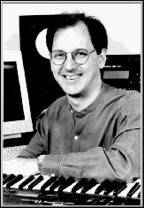

http://www.music.unt.edu/comp/jnelson.html
jnelson@music.cmm.unt.edu
Jon Christopher Nelson's (b. 1960) electro-acoustic music has been performed
widely throughout the United States, Europe, and Latin America and has been
honored with numerous awards including fellowships from the Guggenheim
Foundation, the National Endowment for the Arts, and the Fulbright Commission.
He is also the recipient of a Bourges Prize, a Luigi Russolo Prize, and numerous
electroacoustic commissions. In addition to his electroacoustic works, Nelson
has composed a variety of acoustic compositions that have been performed by
ensembles such as the New World Symphony, the Memphis Symphony, ALEA III, and
others. He has composed in residence at Sweden's national Electronic Music
Studios during the 1989-90 academic year as well as the fall of 1994. Nelson
received his Ph.D. from Brandeis University and has studied digital audio
processing and computer music composition with Barry Vercoe at the MIT Media Lab.
He also has worked as a technical consultant at MIT's Media Lab for composers
Mario Davidovsky, Jean-Claude Risset, and Morton Subotnick. His work can be heard
on the NEUMA, ICMC, and SEAMUS labels.